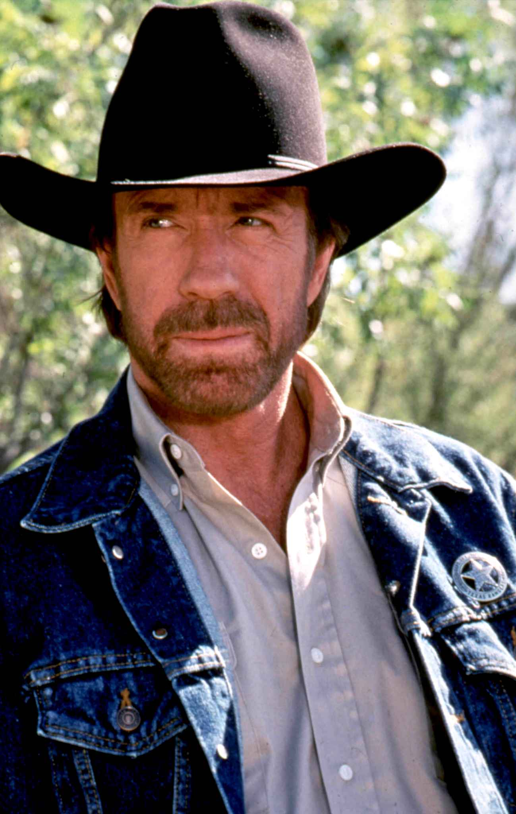

Les fondateurs Sarlin Corentin Victus universis caro ferina est lactisque abundans copia qua sustentantur, et herbae multiplices et siquae alites capi per aucupium possint, et plerosque mos vidimus frumenti usum et vini penitus ignorantes. Victus universis caro ferina est lactisque abundans copia qua sustentantur, et herbae multiplices et siquae alites capi per aucupium possint, et plerosque mos vidimus frumenti usum et vini penitus ignorantes. Simondon Jean Victus universis caro ferina est lactisque abundans copia qua sustentantur, et herbae multiplices et siquae alites capi per aucupium possint, et plerosque mos vidimus frumenti usum et vini penitus ignorantes. Victus universis caro ferina est lactisque abundans copia qua sustentantur, et herbae multiplices et siquae alites capi per aucupium possint, et plerosque mos vidimus frumenti usum et vini penitus ignorantes. Bineaud David Victus universis caro ferina est lactisque abundans copia qua sustentantur, et herbae multiplices et siquae alites capi per aucupium possint, et plerosque mos vidimus frumenti usum et vini penitus ignorantes. Victus universis caro ferina est lactisque abundans copia qua sustentantur, et herbae multiplices et siquae alites capi per aucupium possint, et plerosque mos vidimus frumenti usum et vini penitus ignorantes. Houillon Andy Victus universis caro ferina est lactisque abundans copia qua sustentantur, et herbae multiplices et siquae alites capi per aucupium possint, et plerosque mos vidimus frumenti usum et vini penitus ignorantes. Bonobo victus universis caro ferina est lactisque abundans copia qua sustentantur, et herbae multiplices et siquae alites capi per aucupium possint, et plerosque mos vidimus frumenti usum et vini penitus ignorantes. Les autres membres Chuck Norris  Chuck Norris, la légende, notre star publicitaire, sans qui notre produit n'aurait pas pu toucher autant de monde. Elon Musk Elon Musk, le génie milliardaire sans limites, chercheur dans BubblePoint. Steve Jobs Steve Jobs, connu mondialement, a récemment rejoint Elon Musk à la R&D. Éric Dupond-Moretti Si jamais quelqu'un trouve quelque chose à redire, il est là pour nous défendre : maître Éric Dupond-Moretti. Eliott Alderson Sans aucun doute le plus célèbre des hackers, Eliott Alderson, nous a rejoint pour sécuriser nos produits. Domnique Strauss-Kahn Domnique Strauss-Kahn, Ancien Ministre de l'Économie et des Finances est là pour s'assurer que nos finances soient gérées de main de maître.